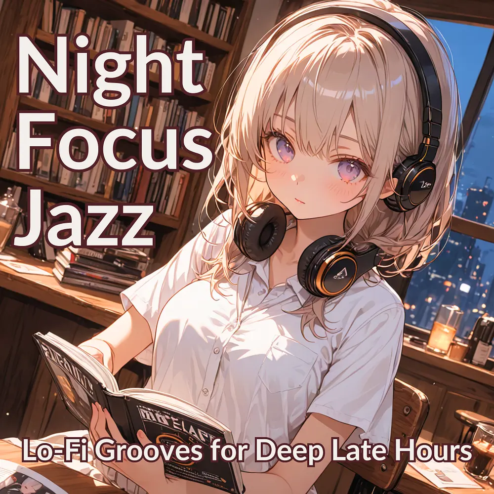

Jazz · Lo-Fi
Night Focus Jazz: Lo-Fi Grooves for Deep Late Hours
Nanashino-chan
Nanashino-chanの「Night Focus Jazz: Lo-Fi Grooves for Deep Late Hours」。Jazz / Lo-Fiを楽しめる全24曲のインストゥルメンタル作品です。「Nightfall Brew / Pages in the Dark」などを収録。気になる曲を試聴して、配信サービスでお気に入りを見つけてください。
2025-08-01 リリース · 24 曲 · Instrumental
アルバムを試聴
気になる音楽を、ここから。
曲を選ぶまでジャケットを表示します。試聴にはYouTubeを使用します。
YOUTUBE PREVIEW
試聴する曲を選んでください
曲を選ぶまでジャケットを表示します。試聴にはYouTubeを使用します。
再生できない場合は、配信サービスでアルバムや曲を開いてください。
配信サービスでアルバムを探す
「検索」のリンクは検索結果を開きます。サービス内でアルバムや曲を選択してください。
収録曲一覧 24
- 01Nightfall Brew
- 02Pages in the Dark
- 03Midnight Bookmark
- 04Warm Light Reflections
- 05Lo-Fi Latte
- 06Quiet Window Rain
- 07Espresso Thoughts
- 08Faded Typewriter
- 09Reading Between Lines
- 10Dim Lamp Vibes
- 11Jazzy Paragraphs
- 12Nostalgic Ink
- 13Steam & Silence
- 14Paper Moon
- 15Still Moments
- 16Late Chapter Loop
- 17Distant Café Sounds
- 18Underline Dreams
- 19Coffee-Stained Notes
- 20Focused Flows
- 21Soft Spine Harmony
- 22Afterword Chill
- 23Study by Candlelight
- 24Last Sip Serenity
SNSで使いたい音源を探す
「Nanashino-chan ＋ 曲名」をコピーして、SNSアプリの音源検索に貼り付けてください。音源の表示は地域やアカウントにより異なります。コピー機能は利用許諾を付与するものではありません。